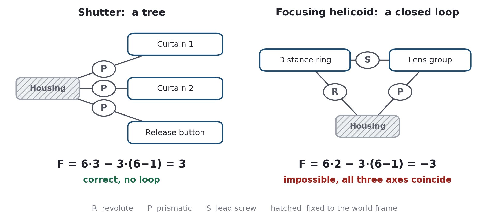
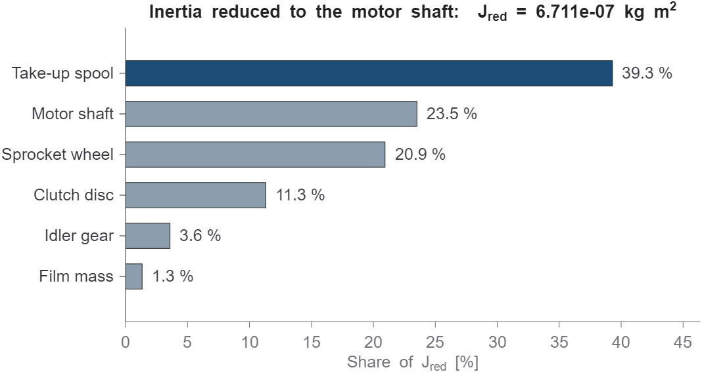
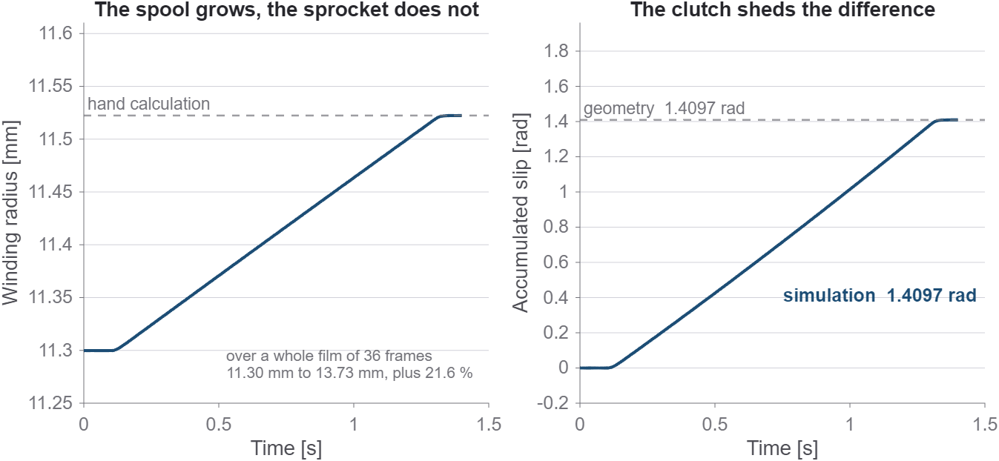

01
Why a camera?
For the course Simulation of Mechanical Systems, every student had to model a mechanical system in Simscape Multibody and verify it against analytical calculations. I picked the camera that sits on my desk: a Canon T70 with a New FD 50 mm f/1.8 lens.
There were two reasons. The first is density. A body of 151 × 89 × 48 mm holds four assemblies, and each one is a different kind of kinematic problem: prismatic joints, a screw pair, a planar linkage repeated five times and a gear train.
The second is verifiability. Canon publishes the flash synchronisation time, the aperture range and the closest focusing distance, and 35 mm film is an international standard. Whatever I could not look up, I measured on the camera, and whatever I could neither look up nor measure was declared as an assumption. Every value in the parameter script carries a tag that says which of these it is.
Almost every number that matters can be checked against something that does not come from the model.
02
How a picture is taken
A photograph needs four things, and each of them is one assembly in the model.
1 Sharpness – focusing helicoid
Turning the distance ring by 182° pushes the lens group out by 4.55 mm through a lead screw. That is exactly the extension the lens equation asks for when a 50 mm lens focuses on its close limit of 0.60 m.
2 Brightness – iris diaphragm
Five blades sit on their own pivots and are driven by pins in a setting ring. I did not pick the blade shape by eye. I solved for it, so that the opening is exactly f/1.8 at one end of the ring travel and f/22 at the other. The full standard series of stops in between then falls out of the kinematics.
3 Time – focal-plane shutter
Two curtains cross the 24 mm film gate, one after the other. At 1/30 s the first curtain has long cleared the gate before the second one starts, so the whole frame is open for a moment. At 1/500 s the second curtain follows almost immediately, and only a narrow slit travels across the film.
Exposure time is not curtain speed. It is the gap between the two curtains.
4 The next frame – film transport
A motor drives the sprocket wheel, the sprocket pulls the film, and a second gear path winds it onto the take-up spool. The geometry comes from the film standard: eight perforations of 4.750 mm make exactly 38.000 mm of film per frame, and one sprocket revolution per frame fixes the sprocket radius. If the model does not return 38.000 mm, a unit or a constraint is wrong.
03
Counting degrees of freedom
Before trusting a simulation, I count by hand what it should be able to do. The Grübler formula does that, and in this model it gets it right once and wrong once.
The shutter is a simple tree: three bodies, each on its own prismatic joint, so three degrees of freedom. The focusing helicoid is a closed loop of two bodies and three joints, and the formula returns −3 for a mechanism that obviously moves. The reason is that all three joint axes coincide with the optical axis. Grübler assumes the constraints are independent, and here they are not.

Simscape solves this by detecting and dropping the redundant constraint equations: 19 of 29 in the complete model. After that, my hand count and the Statistics Viewer agree on 7 degrees of freedom: three in the shutter, one each for focus and aperture, and two in the film transport. One of those two is the motor. The other is the slip of a friction clutch, and that one is there on purpose (more on it below).
04
Where the shutter force comes from
No data sheet tells you how hard the shutter springs pull. My first version simply assumed 400 N because it gave a fast curtain. It was not just wrong by a factor. It slammed the curtain into its end stop at 190 m/s, which the solver could no longer resolve, so the mistake showed up as a numerical artefact rather than as an obviously silly number.
The fix was to use the one dynamic figure Canon does publish: the flash synchronisation time of 1/90 s. By definition, that is how long a curtain takes to cross the 24 mm gate. Solving the equation of motion of a damped curtain backwards for that travel time gives the drive force.
m · dv/dt = F − c · v
The first full run disagreed with my hand calculation by 1.8 % in the initial acceleration: 549.0 against 539.1 m/s². The difference, 9.9 m/s², is gravity. The shutter runs vertically, so the curtain's weight helps drive it. The simulation was right all along. My hand calculation was incomplete.
That raised a fun question: what if you hold the camera upside down? Gravity then brakes the curtains instead, and the sync time moves from 1/90 s to 1/88 s. The exposure time does not change, because it is set by the delay between the curtains. On the real camera you could not measure this cleanly: turning it over also changes the friction in the curtain guides. The model has no friction there, and that is exactly why it can separate the effect.
One honest caveat: the model then returns 1/90 s as the boundary between slit and full-frame exposure. Since the force was derived from that value, it is a consistency check, not an independent validation.
05
Checking the force model
To make sure no force was overlooked, I evaluated the equation of motion itself as a residual at every time step:
Fdrive + Fweight − c · v − m · a = 0
The largest residual over the whole curtain travel is 5.55 · 10⁻¹⁷ N, or 0.90 times the machine epsilon. That is not small – within double precision, it is exactly zero.
The energy balance tells the same story. Of the 6.70 mJ the spring puts in, 52.2 % arrive at the end stop as kinetic energy and 47.8 % are dissipated in the damper. Almost half the spring work is lost, which is why an undamped back-of-the-envelope estimate of the travel time is 15 % off.
06
Masses and torques
In most of the model, motion is prescribed or guided by constraints, so mass does not change the trajectory. It changes the torque the motor has to supply. The useful measure for that is the inertia reduced to the motor shaft: everything the motor has to accelerate, expressed as if it sat on the motor shaft.

The surprise: the take-up spool turns at only a third of motor speed but contributes the largest share, 39.3 %, because its own inertia is five times that of the sprocket wheel. Reduced inertias cannot be estimated; they have to be calculated. And even so, friction in the clutch loads the drive about four times more than accelerating all of that inertia does.
07
The friction clutch
The film transport hides a contradiction. The sprocket delivers the same 38 mm of film every frame, but the take-up spool grows as film piles onto it: from 11.30 to 13.73 mm radius over a 36-frame roll, 21.6 % more. A rigid gear connection cannot satisfy both at once.
So the spool is geared to always want slightly more film than the sprocket delivers, and a friction clutch lets the difference slip. That slip is the seventh degree of freedom: a kinematic contradiction needs somewhere to go.

This is my favourite result. In the simulation, the slip comes out of forces, inertias and a friction law. By hand, it follows from geometry alone. Two routes that share no assumption give the same number to four digits: 1.4097 rad over three frames.
Canon solved it the same way in 1984 – US patent 4,626,092.
08
Limits & next steps
Apart from the clutch and the shutter damping, the model contains no friction and no contact. The diaphragm blades, for example, do not touch each other; they are offset by 0.4 mm along the optical axis so they can pass. And the four assemblies run as one model but not yet as one machine.
The next step would be to close the release cycle. The second curtain hitting its stop would start the transport motor. The release would stay blocked while the film advances, like the double-exposure lock of the real camera. At the end, the curtains would be tensioned again. Adding friction and blade contact would remove most of the remaining limits, but both cost far more than they look.
Curious about the model, the parameter set or the full report? I'm happy to walk you through it.
Get in touchReferences
- Canon Camera Museum. Canon T70: shutter type, speed range, flash synchronisation time, film advance.
- Canon Classics. Canon New FD 50 mm f/1.8: mass, optical construction, aperture range, closest focusing distance.
- Konno, T. Clutch mechanism for camera. US Patent 4,626,092, Canon Inc., 1986.
- Kerle, H., Corves, B., Hüsing, M. Getriebetechnik. 5th ed., Springer Vieweg, 2015.
- Batos, A. Simulation of Mechanical Systems. Lecture notes, Hochschule Düsseldorf.